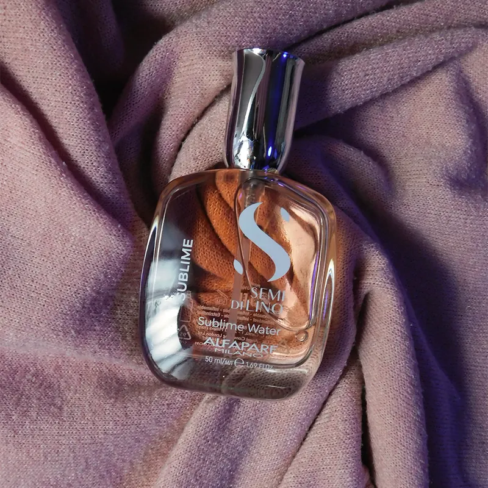

Graphic design
I've been designing since I was 16. I started self-taught with tutorials and small commissions, and today I create pieces that communicate with strong visual impact.

How I started
Over time I decided to go deeper and studied UX/UI Development, where one of the courses let me sharpen my Photoshop and Illustrator skills. That's where one of my most important projects was born: the branding for my own brand, Tomix Visuals.
Tomix Visuals
It's one of the projects I'm proudest of. Not just for the logo design and the choice of colors and type, but for what it represents: the start of a new stage, with a much clearer look and vision.
What I do
I enjoy creating pieces with strong visual impact. My favorites are branding, covers and ad graphics.
- Visual identity for clients across industries: logos, music covers, apparel and advertising assets.
- Assets for Google Search campaigns, Meta ads and Instagram content, currently at Alpha Efficiency.
- The campaign for the hair salon Le Papillon, which I directed, coordinating the model and the makeup artist.
- Graphic assets and audiovisual content for Le Papillon Adrogué's social media (2022).
I also bring design into my audiovisual work: animated graphics and promotional material for social media.

Projects
Tools
The ones I use every day in this area.
- Photoshop
- Illustrator
- After Effects
- Lightroom
- Figma
Let's make something that stands out.
Have a website, a product or a campaign in mind? Tell me what you need and let's think it through together. I work remotely, in English or Spanish.
wikipediatomitob@gmail.com